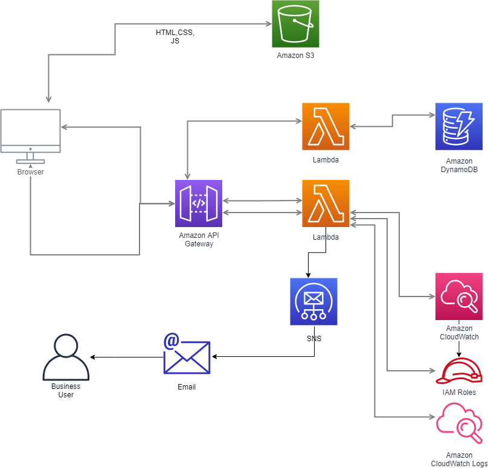

This the current architecture of my site
There are a lots of icons on this page but it is not difficult to explain what I try to do:
- All the files in this website are hosted in S3. So the user when goes to formarc.net is actually pulling those files from there.
- The feedback page contains a form with a submit button. The submit button connects via the Amazon API gateway with a Lambda function that takes the data from the form.
- One Lambda function connects to the AWS SNS service that in turn sends an email to me.
- And another Lambda function is connected to an Amazon DynamoDB where emails will be stored.
And this is the diagram of my site:

Future plans
Connect GitHub with AWS so that I have continuous deployment and integration. In addition,I will include Amazon Cognito for user management and authentication.